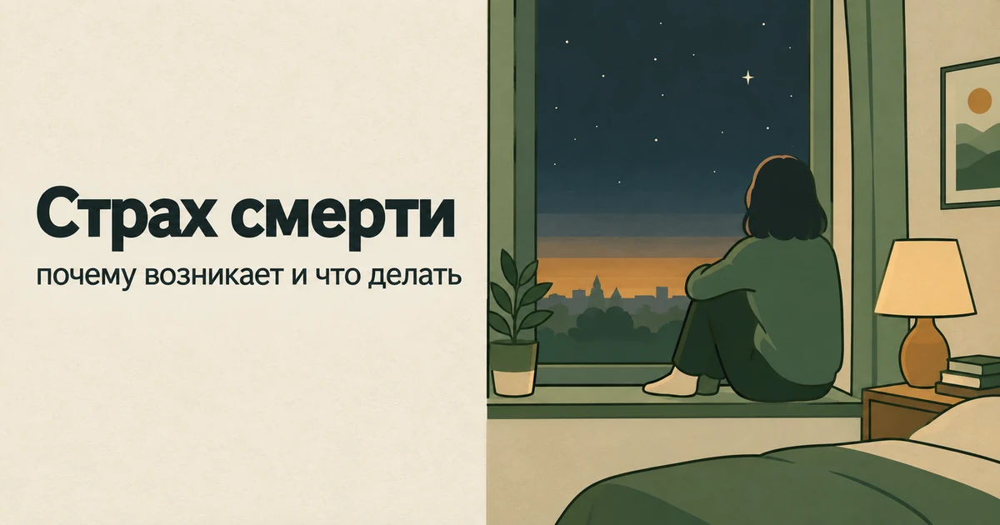
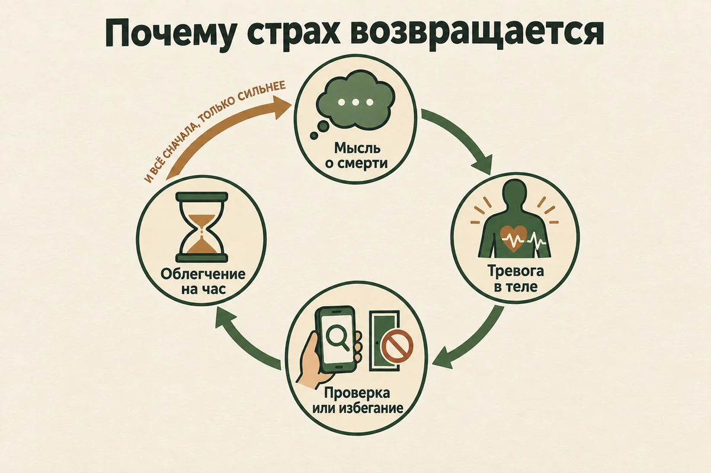
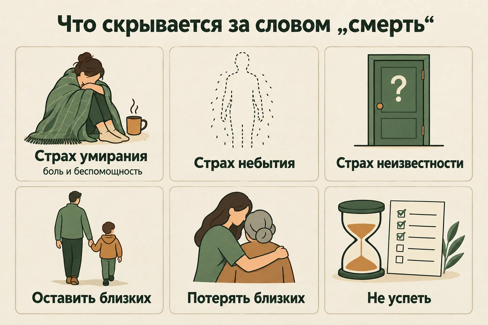
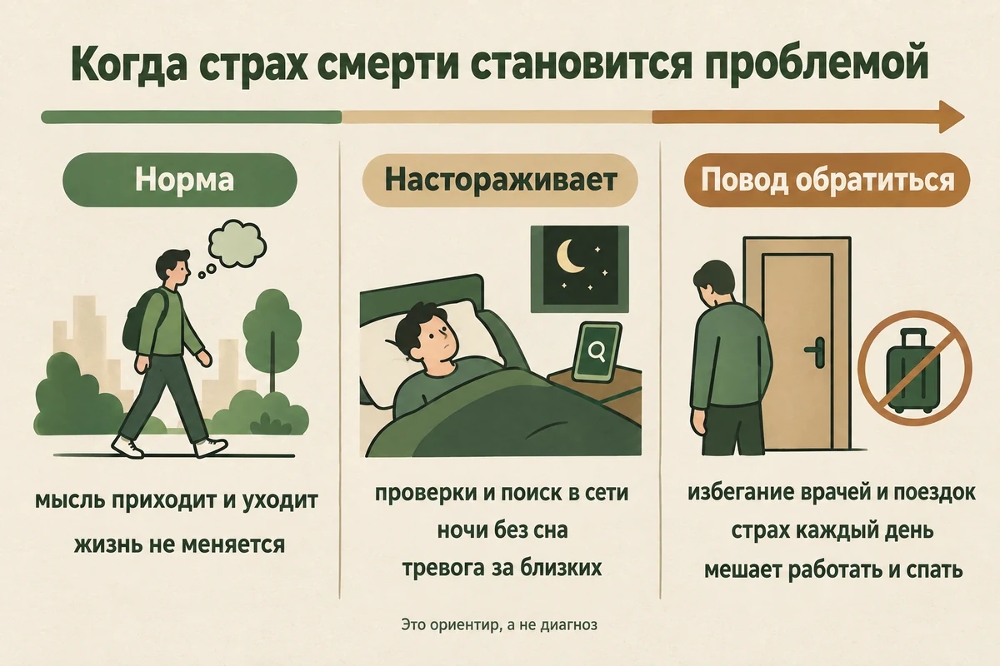
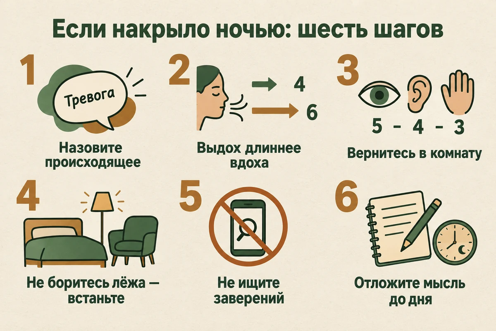
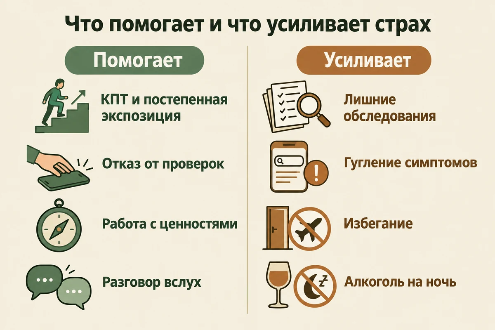
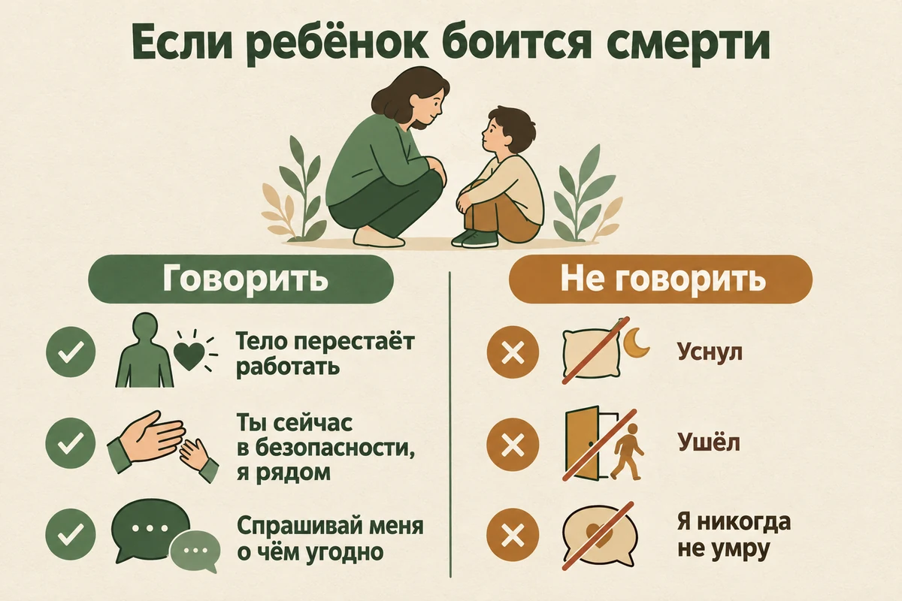

Страх смерти: почему возникает, как проявляется и что делать
Обновлено: 11.09.2026 · 22 минуты чтения

Страх смерти — одна из самых универсальных человеческих тревог, и сам по себе он не признак расстройства. Проблемой он становится, когда мысли о смерти возвращаются каждый день, мешают спать, заставляют избегать врачей, больниц и новостей или превращаются в бесконечные проверки здоровья. Такой выраженный страх часто называют танатофобией. Отдельного диагноза с этим названием нет, но с самим страхом хорошо работают: в метаанализе рандомизированных исследований когнитивно-поведенческая терапия снижала страх смерти заметно сильнее других видов терапии. Ниже — откуда он берётся, почему накрывает ночью, где проходит граница между обычным страхом и тем, с чем стоит идти к специалисту, и что помогает.
- Страх смерти — это нормально?
- Почему появляется страх смерти
- Как проявляется: мысли, тело, поведение
- Чего именно мы боимся, когда боимся смерти
- Танатофобия: когда страх становится проблемой
- За чем может стоять страх смерти
- Почему я боюсь внезапно умереть
- Страх смерти и желание умереть — не одно и то же
- Что делать, если страх смерти накрыл ночью
- Что помогает: КПТ, экспозиция и работа со смыслом
- Что можно сделать самому
- Что делает страх смерти сильнее
- Страх смерти близких
- Если ребёнок боится умереть
- Когда нужна помощь специалиста
- Частые вопросы
Страх смерти — это нормально?
Да. Знание о том, что жизнь конечна, есть у каждого взрослого человека, и тревога рядом с этим знанием — не сбой, а обратная сторона способности думать о будущем. Большую часть времени она фоновая: мы не думаем о смерти, переходя дорогу, но смотрим по сторонам и пристёгиваемся в машине. Иногда страх выходит на первый план — после похорон, после тяжёлого диагноза у знакомого, в день рождения с круглой датой или в три часа ночи без всякой видимой причины — и через несколько дней отступает.
Исследователи давно говорят о страхе смерти не как о редкой «фобии для немногих», а как о базовом страхе, который стоит за многими другими. В обзоре 2014 года в журнале Clinical Psychology Review австралийские психологи описывают его как фундаментальный страх, лежащий в основе целого ряда состояний: тревоги о здоровье, панического расстройства, тревожных и депрессивных расстройств. Отсюда практический вывод. Если страх смерти стал сильным, он редко бывает «просто философским настроением» — чаще это часть более широкой тревоги, и работать с ним имеет смысл вместе с ней.
Поэтому главный вопрос не «боюсь ли я смерти» — боятся почти все, — а «что этот страх делает с моей жизнью». Где проходит эта граница, разобрано ниже.
Почему появляется страх смерти
Единственной причины у страха смерти нет: у одних он тянется с детства, у других вспыхивает в тридцать лет после одного-единственного вечера. Но есть обстоятельства, после которых он появляется или обостряется чаще всего.
- Утрата. Смерть близкого перестаёт быть абстракцией. Тревога за себя и за оставшихся родных — одна из обычных реакций горя, о ней подробно в статье «Как пережить смерть близкого человека».
- Болезнь — своя или чужая. Диагноз у ровесника, собственное обследование, операция, непонятный симптом, который долго не могут объяснить.
- Возраст — но не тот, о котором думают. В американском исследовании 2007 года, опубликованном в журнале Death Studies, страх смерти измеряли у взрослых от 18 до 87 лет. Выше всего он оказался у людей двадцати с небольшим лет и дальше с возрастом в среднем снижался; у женщин отмечался второй подъём около пятидесяти. Это закономерность двух конкретных выборок, а не закон для каждого человека, — но она хорошо показывает, что страх смерти совсем не обязательно приходит с сединой.
- Рождение ребёнка. Появляется человек, которого нельзя оставить, — и собственная смертность вдруг ощущается гораздо острее.
- Паника. Паническая атака почти всегда приходит с ощущением «я умираю прямо сейчас». После нескольких приступов страх смерти может остаться постоянным фоном, даже когда самих атак уже нет.
- Поток тревожных новостей. Катастрофы, эпидемии, военные сводки. Многочасовое чтение ленты держит нервную систему в режиме угрозы, и смерть начинает казаться ближе, чем она есть.
- Периоды пересмотра жизни. Когда кажется, что время уходит, а главное не сделано. Страх смерти здесь переплетается с вопросом о смысле — то, что обычно называют экзистенциальным кризисом.
Отдельно — про склад характера. Людям с высокой общей тревожностью и сильной потребностью в контроле труднее всего даётся неопределённость, а смерть — неопределённость предельная: неизвестно когда, неизвестно как и неизвестно, что потом. Если вы в целом склонны прокручивать «а что если» по любому поводу, это можно оценить в тесте на склонность к беспокойству PSWQ.
Как проявляется страх смерти
Страх смерти живёт одновременно в трёх местах — в мыслях, в теле и в поведении, — и часто человек замечает только одно из них.
В мыслях
- навязчивое «а вдруг я скоро умру» — особенно при любом новом ощущении в теле;
- прокручивание сценариев: болезнь, авария, как узнают близкие, что будет потом;
- мысли о небытии — «меня не будет, а всё останется» — от которых бывает ощущение падения или головокружения;
- страх за детей: «что с ними будет без меня»;
- ощущение бессмысленности: «зачем что-то начинать, если всё равно всё закончится».
В теле
Тревога вызывает вполне реальные ощущения: сердцебиение, нехватку воздуха, ком в горле, холодные руки, головокружение, дрожь, тошноту. NHS среди симптомов фобий прямо называет сильный страх потерять сознание, потерять контроль или умереть. Ловушка в том, что эти ощущения человек принимает за доказательство: «сердце колотится — значит, с ним что-то не так», — и страх разгоняется ещё сильнее. Как тревога переходит в телесные симптомы, разобрано в статье про психосоматику.
В поведении
- Избегание. Не ходить на похороны, не навещать больных, выключать фильмы, не читать новости, откладывать завещание — и даже визит к врачу, «вдруг что-то найдут».
- Проверки. Мерить пульс и давление, ощупывать себя, повторять анализы, искать симптомы в интернете.
- Поиск заверений. Снова и снова спрашивать близких и врачей, точно ли всё в порядке.
- Контроль. Бояться летать и ездить, не отпускать близких в поездки, требовать звонков каждые несколько часов.
- Сон. Страх заснуть и «не проснуться», оттягивание сна до последнего.

Обратите внимание на проверки и поиск заверений: именно они чаще всего превращают разовый страх в постоянный. С них же обычно и начинают в терапии — не с самих мыслей о смерти, а с действий, которыми человек пытается от них защититься.
Чего именно мы боимся, когда боимся смерти
Слово «смерть» объединяет несколько разных страхов, и полезно понять, какой из них ваш: от этого зависит, что поможет.
| Страх | Как звучит | Что обычно за ним стоит | Что его поддерживает |
|---|---|---|---|
| Умирания | «Будет больно и страшно, я буду беспомощным» | Страх боли, болезни, зависимости от других | Настороженность к ощущениям в теле |
| Небытия | «Меня просто не станет» | Невозможность представить отсутствие себя | Попытки до конца «додумать» то, что не додумывается |
| Неизвестности | «А что там, после?» | Вопросы веры и мировоззрения | Потребность в полной определённости |
| Оставить близких | «Что будет с детьми без меня» | Ответственность и привязанность | Ощущение, что всё держится только на вас |
| Потерять близких | «Боюсь, что мама умрёт» | Страх утраты и одиночества | Проверки: звонки, контроль, тревога за их здоровье |
| Не успеть | «Жизнь пройдёт впустую» | Отложенные решения | Неудовлетворённость тем, как живётся сейчас |
Люди редко боятся всего сразу. Кто-то спокойно думает о том, что его не станет, но приходит в ужас от мысли о больнице и боли. Кто-то не боится за себя, но не может заснуть, представляя детей одних. Когда страх назван точно, он перестаёт быть огромным и безымянным — и с ним уже можно что-то делать. С этого начинается и самопомощь, о которой ниже.

Танатофобия: когда страх смерти становится проблемой
Танатофобия — от греческих слов «танатос», смерть, и «фобос», страх — это распространённое название для сильного и стойкого страха смерти. Отдельной рубрики «танатофобия» в Международной классификации болезней 11-го пересмотра нет, и это важно понять правильно: речь не о том, что такой страх «несерьёзный» или не бывает клиническим, а о том, что он не составляет самостоятельного диагноза. Специалист смотрит, во что укладывается конкретная картина: это может быть специфическая фобия (в МКБ-11 такая рубрика есть), генерализованное тревожное расстройство, тревога о здоровье, паническое расстройство, ОКР, а иногда — часть депрессии или последствие пережитой травмы. От ответа зависит, какая помощь подойдёт.
Граница между обычным страхом и тем, с чем стоит идти к специалисту, проходит не по силе переживания в отдельный момент, а по тому, что происходит с жизнью.
| Обычный страх смерти | Повод обратиться к специалисту | |
|---|---|---|
| Сколько места занимает | Приходит эпизодами, по поводу, и отступает | Мысли возвращаются каждый день, неделями и месяцами |
| Поведение | Почти не меняется | Появилось избегание: врачи, больницы, поездки, новости, разговоры |
| Здоровье | Обследования по плану и по назначению врача | Постоянные проверки себя и повторные анализы — или отказ от нужных обследований |
| Сон | Иногда трудно заснуть после тяжёлого дня | Регулярно не получается заснуть или просыпаетесь от страха |
| Близкие | Беспокоитесь, но отпускаете | Нужно постоянно знать, где они и всё ли в порядке, иначе тревога нарастает |
| Смысл | Мысль о конечности иногда подталкивает ценить время | Мысль о конечности обесценивает всё: «зачем, если всё равно» |
Достаточно одной строки из правой колонки, если она заметно мешает жить. Диагноз по таблице не ставится — это ориентир, а оценку проводит специалист в разговоре.

Самопроверка: насколько страх уже влияет на жизнь
Это не тест и не шкала — здесь нет баллов и порогов. Просто отметьте про себя, что из этого было за последние две недели:
- откладывали визит к врачу или обследование из страха услышать диагноз;
- много раз в день проверяли пульс, давление, родинки, ощущения в теле;
- искали симптомы в интернете дольше, чем собирались;
- просили близких подтвердить, что с вами или с ними всё в порядке;
- плохо спали из-за мыслей о смерти;
- отменяли поездки, встречи или дела из-за страха;
- подробно представляли свою смерть или смерть близкого.
Чем больше пунктов и чем сильнее они мешают, тем больше смысла обсудить это со специалистом. Один-два пункта в тяжёлую неделю — не повод ставить на себе крест.
И ещё одна находка, которая объясняет, почему сильный страх смерти не стоит списывать на характер. В исследовании 2019 года в British Journal of Clinical Psychology у 200 человек, обратившихся за помощью с разными психическими расстройствами, выраженность страха смерти оказалась тесно связана с тяжестью состояния: с числом диагнозов, госпитализаций и принимаемых препаратов, с уровнем депрессии, тревоги и стресса. Связь с выраженностью симптомов наблюдалась в этой выборке для двенадцати расстройств. Исследование корреляционное и не доказывает, что страх смерти вызывает болезнь, — но показывает, что к нему стоит относиться всерьёз.
За чем может стоять страх смерти
Сильный страх смерти часто оказывается не отдельной проблемой, а видимой частью другой. Узнать её важно: помощь при разных состояниях строится по-разному. Быстрый ориентир, с чего начинать разбираться:
- думаете в основном о самой конечности жизни — «меня не станет», «всё бессмысленно» — это ближе к экзистенциальному страху;
- ищете скрытую болезнь, проверяете тело и не верите хорошим анализам — похоже на тревогу о здоровье;
- мысль приходит против воли, пугает и требует что-то сделать, чтобы её «обезвредить», — возможны обсессивно-компульсивные механизмы;
- страх приходит приступами, вместе с сердцебиением и нехваткой воздуха, — стоит оценить паническую симптоматику.
Паническая атака
Внезапная волна: сердце колотится, не хватает воздуха, немеют руки — и накрывает уверенность, что вы умираете прямо сейчас. Приступ проходит за минуты, но оставляет страх повторения. Если сердцебиение и удушье приходят приступами, начните со статьи «Паническая атака: что делать» — там разобрано, как вести себя в момент атаки. Но важная оговорка: при первом эпизоде выраженных телесных симптомов — особенно если есть боль или давление в груди, обморок, сильная одышка или непривычно резкое ухудшение самочувствия — не ставьте себе диагноз «паническая атака» по одному описанию симптомов. Нужна медицинская оценка, и это тот случай, когда лучше перестраховаться.
Тревога о здоровье
Страх умереть от болезни, которую «пропустили». NHS описывает это состояние через узнаваемые признаки: постоянные мысли о здоровье, проверка тела на признаки болезни, просьбы к окружающим подтвердить, что вы здоровы, опасение, что врачи или анализы что-то упустили, — и отмечает, что оно родственно ОКР. Сама тревога даёт головную боль и учащённое сердцебиение, которые легко принять за симптомы болезни. Подробнее — в статье про психосоматику, где есть отдельный разбор, когда симптом есть, а причину не находят.
Навязчивые мысли и ОКР
Мысль о смерти приходит против воли, повторяется и требует что-то сделать: позвонить и убедиться, что с близкими всё в порядке, мысленно «отменить» картинку, постучать по дереву. Если за мыслью идёт действие, которое снимает тревогу на минуты, это ближе к навязчивостям. Как с ними обходиться — в статье «Навязчивые мысли», а если ритуалы занимают часы — в разборе обсессивно-компульсивного расстройства.
Горе
После утраты страх смерти — своей и оставшихся близких — одна из самых частых реакций. Обычно он смягчается вместе с острым горем. Если этого не происходит, горе могло застрять; как это распознать, описано в статье о переживании смерти близкого.
Пережитая угроза жизни
Авария, тяжёлая болезнь, насилие, боевые действия. Если страх приходит вместе с непрошеными воспоминаниями, кошмарами, постоянной настороженностью и избеганием всего, что напоминает о случившемся, это похоже на последствия травмы — разбор в статье про ПТСР.
Депрессия
Здесь нужна особая внимательность. При депрессии страх смерти может соседствовать с противоположным — безразличием к жизни или мыслями, что было бы лучше не жить. Внешне это можно спутать, но это разные состояния.
Почему я боюсь внезапно умереть
«Боюсь внезапной смерти», «вдруг я не проснусь», «кажется, что это случится сегодня» — один из самых частых вариантов страха. За ним обычно стоит один из трёх сценариев.
- «Чувствую симптом — значит, умираю». Кольнуло в груди, закружилась голова, онемела рука — и внимание мгновенно достраивает самый плохой исход. Так чаще всего работает паника и тревога о здоровье: сама тревога даёт телесные ощущения, а те подтверждают тревогу.
- «А вдруг это случится сегодня». Мысль приходит без всякого симптома, фоном, и человек живёт в режиме ожидания. Это тревожное предвосхищение: оно не предсказывает событие, а изматывает ожиданием.
- «Я чувствую приближение смерти». Ощущение надвигающейся катастрофы — известный спутник сильной тревоги и панических приступов. Оно очень убедительное, но это состояние нервной системы, а не сообщение о будущем.
И обязательная оговорка, без которой раздел был бы безответственным: всё это относится к ощущениям, которые уже проверены врачом или давно повторяются без изменений. Новая или резкая боль в груди, обморок, сильная одышка, спутанность, слабость в одной половине тела — это не про тревогу, а повод звонить 103 или 112. Правило простое: проверить здоровье один раз — забота о себе, проверять снова и снова — уже тревога.
Страх смерти после болезни или обследования
Отдельная и очень частая история: человек перенёс болезнь, попал в больницу, сделал КТ или сдал плохой анализ — и после этого начал бояться. Здесь важно различать две ситуации, потому что помощь в них разная.
- Медицинская проблема есть. Тогда у тревоги реальный объект, и первое, что помогает, — понятный план лечения и наблюдения от врача. Психологическая помощь здесь не вместо лечения, а рядом с ним: она про то, как жить и не превращать каждый день в ожидание худшего.
- Проблема исключена или под контролем. Тогда работать нужно уже не с болезнью, а с тем, что поддерживает тревогу: повторными проверками, поиском новых обследований, чтением форумов. Это не значит, что «всё от нервов» и симптомов не было, — это значит, что дальше вопрос меняется с «что со мной» на «что удерживает страх».
Страх смерти и желание умереть — не одно и то же
Эти состояния легко перепутать по словам, но они противоположны. «Я боюсь умереть» — это про желание жить и страх, что жизнь закончится. «Я хочу, чтобы меня не было» — про то, что жизнь стала невыносимой. Бывает и так, что человек чувствует и то, и другое сразу: «хочу умереть, но боюсь».
Что делать, если страх смерти накрыл ночью
Почему страх смерти часто приходит перед сном
Связь между страхом смерти и сном — не только житейское наблюдение. В систематическом обзоре и метаанализе 2025 года (15 исследований, 2786 участников) более сильный страх смерти оказался связан с проблемами сна, прежде всего с бессонницей и низким качеством сна; связь была статистически значимой, но небольшой. Авторы отдельно подчёркивают, что направление этой связи неясно: тревога может мешать спать, а плохой сон — усиливать тревожность. В работе 2026 года с участием 515 взрослых страх смерти был связан с бессонницей, и посредником в этой связи выступала выраженность ночных кошмаров — это тоже опрос, а не эксперимент, но направление поиска понятное.
К этому добавляется и простая бытовая причина: ночью меньше внешних отвлечений и больше времени на внутренние переживания, а само засыпание — своего рода «выключение», за которое мысли о конце цепляются особенно легко. Спорить с ними в три часа ночи бесполезно: утром те же аргументы звучат совсем иначе. Задача ночью не в том, чтобы решить вопрос смерти, а в том, чтобы вывести тело из режима тревоги.
- Назовите происходящее. Про себя или шёпотом: «Это приступ страха. Он неприятный, но пройдёт». Это не спор с мыслью, а смена позиции — из участника в наблюдателя.
- Сделайте выдох длиннее вдоха. Например, вдох на четыре счёта, выдох на шесть, несколько минут подряд. Это не выключатель тревоги, но обычно помогает снизить телесное напряжение и переводит внимание с мыслей на дыхание.
- Вернитесь в комнату через ощущения. Назовите пять предметов, которые видите, четыре звука, которые слышите, три ощущения в теле — вес одеяла, прохладу подушки, опору под спиной. Страх живёт в будущем, а ощущения — в настоящем.
- Не боритесь со страхом лёжа. Если чувствуете, что долго не засыпаете и начали воевать с мыслями в кровати, встаньте, включите приглушённый свет и ненадолго займитесь чем-то спокойным — только не новостями в телефоне. Возвращайтесь в постель, когда снова появится сонливость. Так вы не даёте кровати превратиться в место, где страшно.
- Не ищите заверений. Не гуглите «можно ли умереть во сне» и не мерьте пульс по кругу: облегчение продлится до следующей волны. Если ощущения в теле новые, резкие или сопровождаются болью в груди, — звоните 103 или 112, это не тот случай, когда ждут. Если ощущения знакомые и уже проверенные врачом, дайте им пройти.
- Отложите мысль до дня. Скажите себе: «Я подумаю об этом завтра, в семь вечера, пятнадцать минут». Если днём тема всё ещё важна — вернитесь к ней с листом бумаги, а не в темноте.
Если ночные волны повторяются неделями, работать нужно и со сном: как разорвать связку «кровать — тревога», описано в статье о бессоннице при тревоге.

О страхе смерти трудно говорить с близкими: кто-то отшучивается, кто-то пугается сам. Проговорить его можно анонимно, без регистрации и в любое время суток — в том числе ночью, когда накрывает сильнее всего.
Поговорить о своём страхеЧто помогает: КПТ, экспозиция и работа со смыслом
Страх смерти — не та тема, где остаётся только «смириться». Но и универсального лечения «от страха смерти» не существует: помощь выстраивают под то, во что этот страх укладывается у конкретного человека.
Когнитивно-поведенческая терапия — самый изученный вариант
В 2018 году в Journal of Anxiety Disorders вышел метаанализ 15 рандомизированных контролируемых исследований о том, как психологические вмешательства влияют на страх смерти. В среднем они снижали его умеренно. Но вид терапии имел значение: когнитивно-поведенческая терапия давала выраженное снижение страха по сравнению с контрольными группами, а другие изученные виды терапии значимого эффекта в этом анализе не показали. Авторы честно оговаривают, что исследований мало и качество многих невысокое, поэтому это ориентир, а не окончательный вердикт.
Что обычно происходит в КПТ при страхе смерти:
- Уточняют, какой именно страх ваш и какими убеждениями он поддерживается. Например: «если я думаю о смерти, значит, что-то случится» или «я не выдержу этих мыслей».
- Находят, что человек делает, чтобы не бояться, — проверки, избегание, поиск заверений — и постепенно от этого отказываются.
- Отдельно работают с телесными ощущениями, если страх связан с паникой или тревогой о здоровье: учатся переносить сердцебиение и головокружение, не толкуя их как начало катастрофы.
Экспозиция: не список заданий, а лестница под конкретного человека
Экспозиция — встреча с тем, чего человек избегает, — проводится не одинаково для всех, и готового набора упражнений «при страхе смерти» не существует. Сначала специалист выясняет, чего именно человек избегает и какими действиями снимает тревогу. Потом строится постепенная лестница: от ситуаций, которые вызывают умеренный дискомфорт, к более трудным.
Как это выглядит при разных состояниях:
- При тревоге о здоровье — постепенный отказ от проверок тела, от повторных обследований без назначения и от поиска подтверждений в интернете.
- При паническом расстройстве — работа именно со страхом телесных ощущений, а не с темой смерти как таковой.
- При ОКР — экспозиция с предотвращением ритуалов: человек встречается с пугающей мыслью и не выполняет действие, которое обычно её «обезвреживает».
- При специфическом страхе — постепенное возвращение того, что было исключено из жизни: разговоров, фильмов, поездок, визитов к врачу.
Цель во всех случаях одна, и она не в том, чтобы «перестать бояться смерти». Она в том, чтобы страх перестал управлять жизнью через избегание и защитные действия. Проходить это лучше со специалистом: выстроить экспозицию слишком резко очень легко, и тогда вместо нового опыта получается ещё одно подтверждение, что бояться было правильно.
Работа со смыслом и ценностями
Это направление не спорит со страхом, а меняет его роль. В терапии принятия и ответственности мысль о смерти не пытаются убрать: ей дают место и смотрят, от чего человек отказывается, пытаясь её не чувствовать. Экзистенциальная традиция идёт дальше. Психиатр Ирвин Ялом в книге «Вглядываясь в солнце. Жизнь без страха смерти» описывает, как осознание конечности становится поводом прожить жизнь так, чтобы меньше сожалеть, и как утешает мысль, что человек продолжается в том, что передал другим, — как расходятся круги по воде. Книга написана для широкого читателя и многим помогает, но это взгляд опытного терапевта, а не клиническое руководство.
Практики осознанности полезны как навык: заметить мысль «меня не станет» и не нырнуть в неё целиком, а дать ей пройти, как проходят другие мысли.
Если собрать всё вместе, получается такая иерархия: наиболее исследованный вариант при выраженном страхе смерти — КПТ; внутри неё метод подбирают под картину — экспозиция с предотвращением ритуалов при ОКР, работа с телесными ощущениями при панике и тревоге о здоровье; терапия принятия и ответственности помогает с избеганием и ценностями; экзистенциальный подход уместен там, где на первом плане вопросы смысла и жизненных решений, а не симптомы.
Лекарства
Отдельных лекарств «от страха смерти» не существует. Но если страх — часть тревожного или панического расстройства, ОКР или депрессии, врач может назначить лечение этого состояния: NHS среди вариантов лечения фобий называет в том числе антидепрессанты. Решение, подбор и отмена — только у врача. А вот самостоятельно использовать алкоголь или седативные средства как способ справляться со страхом не стоит: алкоголь ухудшает сон и на следующий день усиливает тревожность — этот механизм разобран в статье про алкоголь и тревогу, — а препараты с успокаивающим действием применяются только по назначению врача и под его контролем.

Что можно сделать самому
Самопомощь не заменяет терапию, если страх уже мешает жить. Но она часто останавливает нарастание, а когда страх приходит эпизодами, её нередко оказывается достаточно.
- Назовите страх точно. Вернитесь к таблице выше и допишите фразу: «Больше всего я боюсь, что…». Не «смерти», а «что будет больно», «что дети останутся одни», «что меня просто не станет». У каждого варианта свой следующий шаг.
- Разделите на то, что зависит от вас, и то, что нет. Проходить плановые обследования, лечить то, что лечится, пристёгиваться, оформить документы и распоряжения, обсудить с близкими, чего вы хотите, — зона действия. Когда и как закончится жизнь — нет. Сделанное из первой части часто снимает заметную долю тревоги, а попытки контролировать вторую только её кормят.
- Посчитайте проверки и сократите их. NHS при тревоге о здоровье советует завести дневник: сколько раз в день вы проверяете тело, спрашиваете близких, читаете о болезнях, — и в течение недели постепенно делать это реже.
- Верните то, чего стали избегать. По одному пункту, начиная с самого лёгкого: фильм, который выключили, разговор, поездка, визит к пожилому родственнику. Избегание обещает спокойствие, но делает мир теснее, а страх — больше.
- Выделите страху время. Пятнадцать минут днём, в одно и то же время, когда можно подумать, записать, поплакать. Всё остальное время мысль «откладывается до встречи». Звучит странно, но у тревоги появляется рамка, и она перестаёт расползаться на весь день.
- Поговорите о смерти вслух. С близким, с другом, со специалистом. Страх, о котором молчат, растёт: он кажется постыдным и единственным в мире. Сказанный вслух, он становится обычным человеческим переживанием.
- Спросите, о чём страх вам подсказывает. Если бы жить оставалось не бесконечно — что вы перестали бы откладывать? С кем бы помирились? Это не упражнение «цените каждый миг», а способ повернуть страх из парализующего в подсказку.
- Уберите то, что держит тело в тревоге. Недосып, кофеин во второй половине дня, лента новостей перед сном. NHS при фобиях отдельно советует не пить кофе и энергетики после 15:00 — они ухудшают сон и усиливают тревогу.
Что делает страх смерти сильнее
Почти всё, что интуитивно кажется защитой от страха, на деле его поддерживает. Ошибки здесь очень естественные, поэтому о них стоит знать заранее.
- Обследования ради уверенности. Нужные обследования по назначению врача — это забота о здоровье. Пятое УЗИ за полгода при хороших результатах — уже ритуал: уверенность держится до следующего ощущения в теле.
- Гугление симптомов и форумы. Любой симптом в поиске рано или поздно приводит к самому страшному диагнозу, а истории на форумах пишут в основном те, у кого всё закончилось плохо.
- Постоянные просьбы подтвердить, что всё в порядке. Близкие устают, а каждое следующее заверение действует всё короче.
- Попытки запретить себе думать. Когда человек любой ценой гонит мысль о смерти, она обычно становится только заметнее — это знакомо каждому по «не думай о белом медведе». Полезнее не спорить с мыслью и не требовать от себя, чтобы её не было вовсе.
- Жёсткий контроль близких. Звонок каждый час успокаивает ненадолго, а затем тревога требует следующего — и отношения начинают страдать.
- Алкоголь и успокоительные без назначения. Снимают страх вечером и возвращают его утром с процентами.
- Многочасовое чтение новостей о катастрофах. Знать, что происходит в мире, — одно; часами листать сводки — другое. Второе держит нервную систему в режиме угрозы.
- «Не накручивай себя». От других и от себя самого. Стыд за страх добавляет второй слой: мало того, что страшно, так ещё и «со мной что-то не так».
Про веру — отдельно и бережно. Для многих людей опорой в отношении смерти служат религия или философские убеждения, и это личное: статья не предлагает их менять. Если вера даёт вам опору, это ресурс, а не то, от чего нужно избавляться.
Страх смерти близких: «боюсь, что мама умрёт»
Этот страх часто сильнее страха за себя. Родители стареют, у них появляются болезни, и каждый звонок в неурочное время заставляет сжаться. Для взрослого человека это обычная часть привязанности — и одновременно тема, которая легко перерастает в постоянную тревогу.
- Отличайте заботу от контроля. Помочь записаться к врачу, приехать, договориться о регулярных звонках — забота. Звонить трижды в день, чтобы убедиться, что всё в порядке, — ритуал, который ненадолго успокаивает вас и тревожит обоих.
- Проводите время, а не только тревожьтесь. Страх часто показывает, чего не хватает: встреч, разговоров, сказанного вслух. То, что вы сделаете сейчас, облегчит и настоящее, и возможное горе потом.
- Говорите о важном заранее. Как человек хочет лечиться, где лежат документы, чего он хочет. Такие разговоры страшно начинать, но после них обычно спокойнее обоим.
- Не проживайте утрату заранее. Прокручивание сцены прощания не готовит к горю — оно просто отнимает время, которое у вас есть сейчас.
Если близкий тяжело болен и прогноз серьёзный, тревога в такой ситуации — не расстройство, а реакция на реальность, и поддержка нужна прежде всего вам самим. Как быть рядом с человеком в трудное время, описано в статье «Как поддержать человека в горе».
Если ребёнок боится умереть
Вопросы «а я умру?», «а ты умрёшь?» и страх, что умрут родители, обычно появляются в дошкольном и младшем школьном возрасте — когда ребёнок начинает понимать, что смерть необратима и касается всех. Это этап развития, а не признак беды.
Как говорить, подсказывают данные. В исследовании 2007 года в журнале Clinical Child Psychology and Psychiatry участвовали 90 детей от 4 до 8 лет: более зрелое понимание смерти как биологического события было связано с меньшим страхом смерти — и связь сохранялась после учёта возраста и общей тревожности. Это наблюдение, а не доказательство, что определённые слова успокаивают лучше других. Но практический вывод из него разумный: с ребёнком обычно полезнее говорить простыми и конкретными словами, чем оставлять его наедине с неясными метафорами.
- Говорите правду простыми словами. «Умер — значит, тело перестало работать: сердце не бьётся, человек не дышит и ничего не чувствует». Не говорите «уснул» — ребёнок может начать бояться сна.
- Отвечайте коротко и ровно на заданный вопрос. Если нужно больше, ребёнок спросит сам.
- Успокаивайте честно и про настоящее. «Ты сейчас в безопасности, я рядом. Люди болеют и умирают, но сейчас с тобой всё в порядке, и ты всегда можешь меня спросить». Обещать «я никогда не умру» не стоит — как и говорить, что умирают только очень старые: ребёнок рано или поздно услышит обратное, и доверие к вашим словам пошатнётся.
- Не пугайтесь повторов. Дети возвращаются к трудному вопросу много раз — так они его осваивают.
- Если в семье есть вера, ею можно поделиться — вместе с простым объяснением, а не вместо него.

К детскому психологу стоит обратиться, если страх держится неделями, мешает спать одному, ходить в сад или школу и отпускать родителей, сопровождается болями в животе или головными болями без причины, или появился после утраты или пугающего события. Если ребёнок стал отказываться от школы, пригодится разбор «Ребёнок не хочет в школу».
Когда нужна помощь специалиста
Обратиться за помощью стоит, если хотя бы одно из этого про вас:
- страх смерти занимает мысли почти каждый день уже несколько недель или месяцев;
- из-за него вы избегаете врачей, поездок, людей, новостей — или, наоборот, не можете остановить проверки и обследования;
- он мешает спать, работать, заботиться о детях;
- приходят приступы сердцебиения, удушья и ощущения «умираю прямо сейчас»;
- страх появился после пережитой угрозы жизни и сопровождается воспоминаниями и кошмарами;
- к страху добавились подавленность, безразличие, мысли о том, что жить незачем;
- вы снимаете страх алкоголем или растущими дозами успокоительных.
С чего начать. При телесных симптомах — с терапевта, чтобы проверить здоровье. Со страхом как таковым — к психотерапевту или клиническому психологу, работающему в когнитивно-поведенческом подходе. Если нужна оценка тревожного расстройства или может понадобиться лечение лекарствами — к психиатру или психотерапевту с медицинским образованием. Бесплатные варианты в России собраны в справочнике бесплатной психологической помощи.
Если хочется понять общий фон, есть короткий тест на тревожность GAD-7. Он не про смерть, но показывает, насколько сильна тревога в целом, — а страх смерти, как мы уже видели, чаще всего растёт именно из неё.
Статья носит просветительский характер и не заменяет консультацию специалиста. Если вам прямо сейчас невыносимо тяжело или появляются мысли о том, чтобы причинить себе вред, позвоните: 112 — при угрозе жизни; +7 (495) 989-50-50 — круглосуточная линия ЦЭПП МЧС России; 8-800-2000-122 (с мобильного — 124) — детям, подросткам и их родителям; 051 (с мобильного 8 (495) 051) — для Москвы. Куда ещё можно обратиться бесплатно — в справочнике помощи.
Частые вопросы
Нормально ли бояться смерти?
Да. Знание о конечности жизни есть у каждого взрослого, и тревога рядом с ним — обычная часть человеческой психики, а не признак расстройства. Чаще всего она фоновая и обостряется на время — после утраты, болезни, в периоды перемен. Поводом обратиться к специалисту страх становится, когда занимает мысли каждый день, мешает спать, заставляет избегать врачей, поездок и разговоров или превращается в постоянные проверки здоровья.
Танатофобия — это диагноз?
Нет, это общее название для сильного и стойкого страха смерти: отдельной рубрики с таким именем в Международной классификации болезней нет. Когда страх мешает жить, специалист оценивает, во что он укладывается: специфическая фобия, генерализованное тревожное расстройство, тревога о здоровье, паническое расстройство, ОКР, иногда депрессия или последствия травмы. От этого зависит, какая помощь подойдёт.
Почему страх смерти приходит ночью?
Ночью внимание нечем занять, тело устало, а засыпание само по себе похоже на «выключение» и легко цепляет мысли о конце. Спорить с такими мыслями в темноте бесполезно: утром те же аргументы звучат иначе. Помогает удлинить выдох, вернуть внимание к ощущениям в комнате и, если через двадцать минут не отпускает, встать и заняться чем-то спокойным, не открывая новости.
Можно ли совсем перестать бояться смерти?
Честная цель — не полное отсутствие страха, а страх, который не управляет жизнью. Большинство людей время от времени тревожатся о смерти, и это не мешает им жить полно. По данным метаанализа 2018 года, когнитивно-поведенческая терапия заметно снижает страх смерти, но и после неё мысли о конечности иногда возвращаются — разница в том, что они перестают вызывать панику, избегание и бессонные ночи.
Что делать, если ребёнок боится смерти?
Отвечать честно и простыми словами: смерть — это когда тело перестаёт работать. Не использовать выражения «уснул» и «ушёл», чтобы ребёнок не начал бояться сна или ждать возвращения, и не обещать, что вы никогда не умрёте. Успокаивать лучше про настоящее: ты сейчас в безопасности, я рядом, и меня можно спросить о чём угодно. В исследовании детей 4–8 лет более зрелое понимание смерти как биологического события было связано с меньшим страхом. Если страх держится неделями, мешает спать или ходить в сад и школу, стоит обратиться к детскому психологу.
Почему я боюсь заснуть и не проснуться?
Засыпание похоже на потерю контроля, и мысли о смерти цепляются за него особенно легко: человек начинает оттягивать сон, прислушиваться к сердцебиению и следить за дыханием — от чего заснуть становится ещё труднее. Связь подтверждается и исследованиями: в метаанализе 2025 года более сильный страх смерти был связан с бессонницей и худшим качеством сна, хотя направление этой связи пока неясно — тревога мешает спать, а недосып усиливает тревогу. Помогает не борьба с мыслями в кровати, а спокойный ритуал отхода ко сну, отказ от проверок пульса и подъём из постели, если сон не идёт.
Страх смерти — это предчувствие?
Нет. Ощущение «со мной скоро что-то случится» — частый спутник тревоги и паники, и оно ничего не сообщает о будущем: тревога создаёт чувство угрозы независимо от того, есть ли угроза на самом деле. При этом новые, резкие или нарастающие телесные симптомы — боль в груди, одышку, обмороки — нужно показать врачу, а при острой боли в груди звонить 103 или 112. Проверить здоровье один раз — забота о себе, проверять снова и снова — уже часть тревоги.
К какому специалисту идти со страхом смерти?
Со страхом как таковым — к психотерапевту или клиническому психологу, работающему в когнитивно-поведенческом подходе: именно для этого метода в исследованиях получены наиболее выраженные результаты. Если есть телесные симптомы, сначала стоит пройти обследование у терапевта. Если страх — часть тревожного расстройства, паники или депрессии и может понадобиться лечение лекарствами, нужен психиатр или психотерапевт с медицинским образованием. Бесплатно в России можно обратиться в психоневрологический диспансер по месту жительства и в региональные центры психологической помощи.
Как подготовлен материал. Текст подготовлен редакцией AI Therapist на основе систематических обзоров, метаанализов и рекомендаций для пациентов. Данные о природе страха смерти, его связи с психическими расстройствами и сном, возрастных различиях и эффективности психологической помощи приводятся по рецензируемым исследованиям, ссылки на первоисточники стоят прямо в тексте; описание симптомов тревоги, фобий и тревоги о здоровье — по материалам NHS; классификация — по МКБ-11. Мы сознательно не публикуем шкалы страха смерти: самостоятельное заполнение даёт цифру, но не даёт смысла. Статья носит просветительский характер, не является медицинской рекомендацией и не заменяет консультацию специалиста — диагноз ставит и лечение назначает врач.
Источники: Iverach L., Menzies R. G., Menzies R. E. «Death anxiety and its role in psychopathology: Reviewing the status of a transdiagnostic construct», Clinical Psychology Review, 2014, Menzies R. E., Sharpe L., Dar-Nimrod I. «The relationship between death anxiety and severity of mental illnesses», British Journal of Clinical Psychology, 2019, Menzies R. E. et al. «The effects of psychosocial interventions on death anxiety: A meta-analysis and systematic review of randomised controlled trials», Journal of Anxiety Disorders, 2018, Menzies R. E., Brown J., Marchant J. «“To die, to sleep”: A systematic review and meta-analysis of the relationship between death anxiety and sleep», Journal of Anxiety Disorders, 2025, Menzies R. E. et al. «Is a fear of death keeping you awake at night? Death anxiety predicts insomnia through nightmare severity», Death Studies, 2026, Russac R. J. et al. «Death anxiety across the adult years: an examination of age and gender effects», Death Studies, 2007, Slaughter V., Griffiths M. «Death understanding and fear of death in young children», Clinical Child Psychology and Psychiatry, 2007, NHS — Phobias, NHS — Health anxiety, NHS — Panic disorder, ВОЗ — МКБ-11. Источники проверены 11.09.2026.
Кто отвечает за содержание сайта и по каким правилам мы готовим материалы — на странице о проекте.
Читать также
- Паническая атака: что делать в момент приступа — если страх смерти приходит волной с сердцебиением и удушьем.
- Психосоматика: как тревога превращается в телесные симптомы — если страх связан с ощущениями в теле.
- Как пережить смерть близкого человека — если страх появился после утраты.
- Тревога: полный гид по видам и способам справиться — страх смерти чаще всего растёт из общей тревоги.
- Бессонница при тревоге — если страх накрывает ночами.
- Когнитивно-поведенческая терапия — метод с наиболее выраженными результатами при страхе смерти.